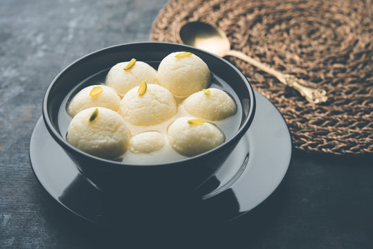

Rasgulla
Rasgulla is a popular Indian dessert made with chenna balls soaked in sugar syrup. It's a light and spongy dessert that's perfect after a heavy meal.
Directions:
- In a mixing bowl, add milk and bring it to a boil.
- Add lemon juice or vinegar to the boiling milk and stir well until the milk curdles completely.
- Drain the curdled milk through a muslin cloth and rinse it under running water to remove the sourness of the lemon juice or vinegar.
- Squeeze the excess water from the chenna (curdled milk) and knead it for 5-10 minutes until it becomes smooth and soft.
- Divide the chenna into small balls of equal size and roll them between your palms until they are smooth and free of cracks.
- In a pressure cooker or a deep pot, add water, sugar and cardamom pods and bring it to a boil.
- Add the chenna balls to the boiling sugar syrup and cover the pot with a lid.
- Cook the rasgullas in the sugar syrup for 10-12 minutes on medium heat until they double in size.
- Turn off the heat and let the rasgullas cool down to room temperature.
- Refrigerate the rasgullas for a few hours before serving.
- Rasgulla is ready to serve chilled.